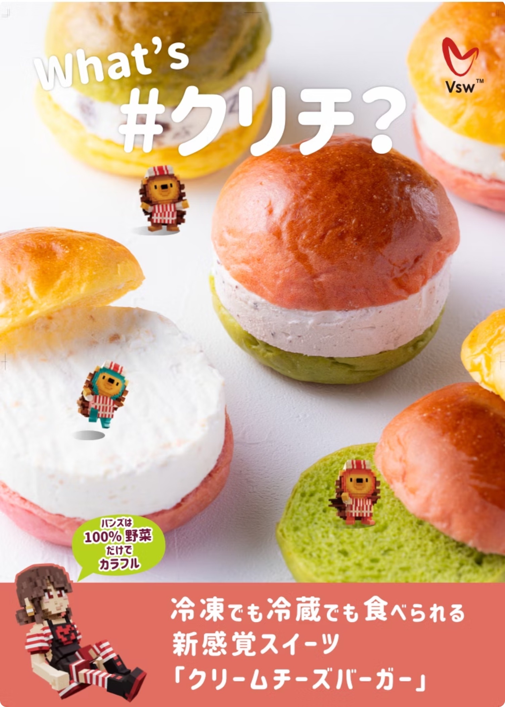
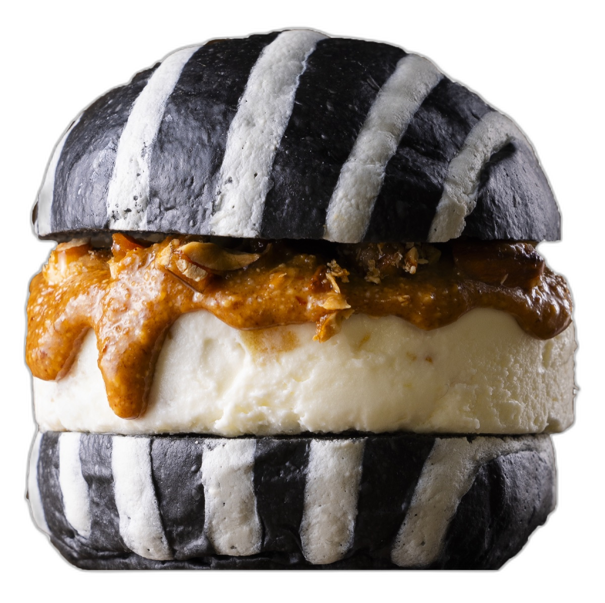
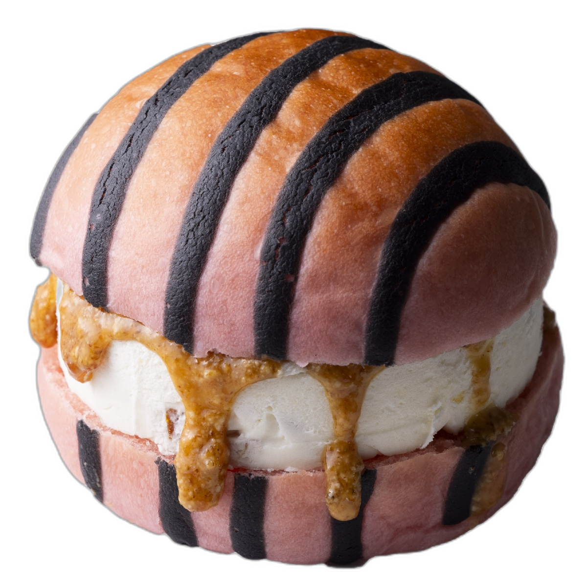
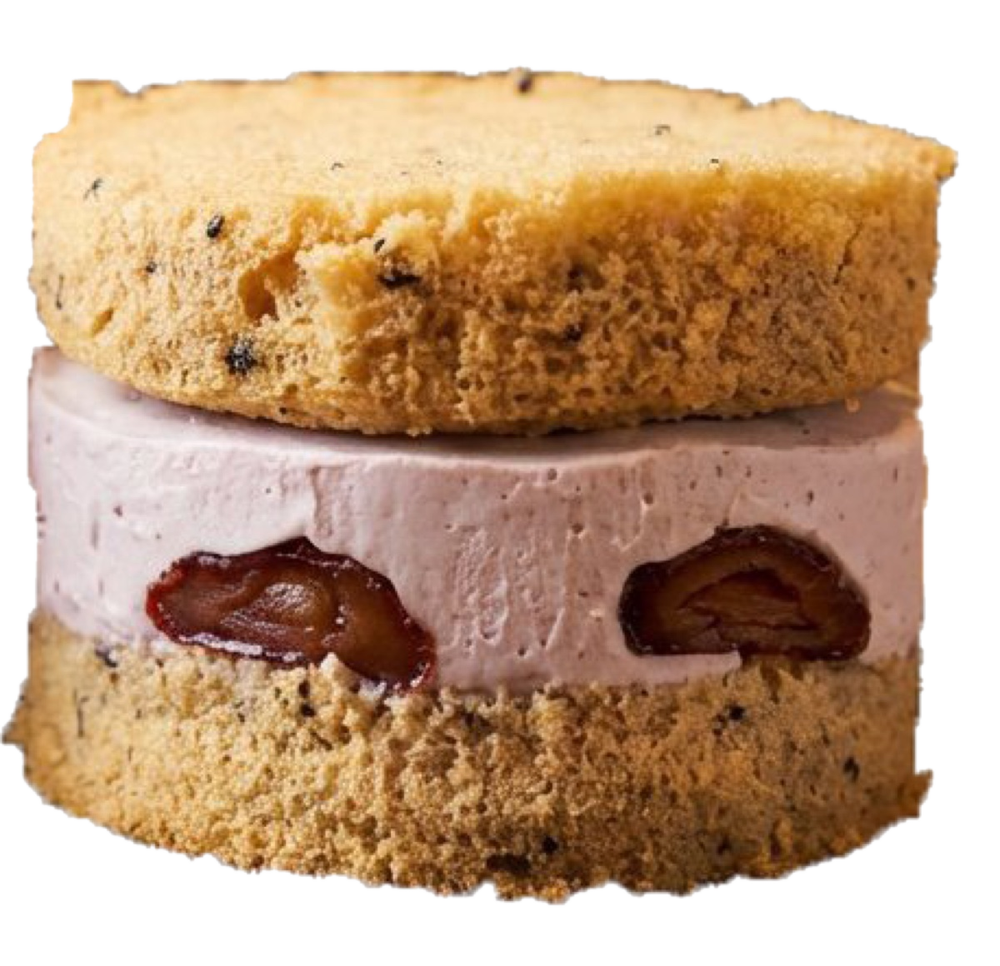

Vsw株式会社 概要
冷凍スイーツ「#クリチ」を中心に、食・イベント・SNS・メタバースを掛け合わせて、
新しいブランド体験をつくる会社です。
Vsw株式会社とは
Vsw株式会社は、冷凍スイーツブランド 「#クリチ」 を中心に、食品・イベント・SNS・コラボレーション・デジタル／メタバース展開、そして 生成AIを活用したブランド企画・コンサルティング までを行う会社です。
商品をただ販売するだけではなく、
- 「見た目のインパクト」
- 「食べ方の楽しさ」
- 「SNSで広がる話題性」
- 「イベントやコラボでの体験価値」
を大切にしています。

主力ブランド 「#クリチ」
#クリチは、"パンでもアイスでもない！" 新感覚スイーツバーガー です。
特製バンズに濃厚なクリームチーズをサンドした冷凍前提の商品で、冷凍のままでも、少し解凍しても美味しく楽しめます。
アイス感覚
冷凍のままで、アイスのような食感に。
溶けかけスイーツ
常温20〜30分で、なめらかなクリームチーズに。
ハッピー#クリチ
トースターで温めると、外カリッ・中とろり。


#クリチの特徴
#クリチの特徴は、味だけではありません。
ハンバーガーのような見た目でありながらスイーツである意外性があり、初めて見る人に「何これ？」と思わせる力があります。
また、自然の果物や野菜の色を活かしたカラフルなバンズ展開も可能です。ピンク、黄色、緑などの色味を取り入れることで、見た目にも楽しく、SNSで写真を撮りたくなる商品になります。
さらに、米粉シフォン#クリチのように、素材や形状を変えた派生商品にも展開できます。

NY #KURICHI
竹炭ストライプ
ブラリ絡むビターなレモン。特製クリームチーズにアーモンドとクルミの香はしいプラリネをサンド。

赤レンガ #KURICHI
ビーツストライプ
祝祭のオレンジプラリネ。鮮やかな赤系バンズと、柑橘の明るい酸味のコントラスト。

米粉 #SOICHI
紅茶香る米粉バンズ
豆乳ベースの軽やかなクリームチーズ「ソイチ」と大粒いちごを使用した次世代ヘルシースイーツ。
事業展開
Vsw株式会社は、#クリチを中心に、さまざまな形で事業を展開しています。
主な展開先：
#クリチは冷凍前提の商品であるため、イベントや催事、配送、ギフト展開とも相性がよく、販売チャネルを広げやすい特徴があります。
また、見た目のインパクトや食べ方の面白さがあるため、Instagram、TikTok、YouTube Shorts などのSNS・動画コンテンツとも相性があります。

デジタル・AI・メタバース展開
Vsw株式会社は、食品ブランドでありながら、デジタル領域・生成AI領域にも積極的に取り組んでいます。
The Sandbox では、Vsw株式会社や#クリチに関連する体験・コンテンツがすでに制作されています。
リアルな商品とデジタル空間をつなぐことで、#クリチを単なるスイーツではなく、キャラクター性や世界観を持つブランドとして広げていくことができます。
▶ AI活用ブランディング／AIコンサルティング
食品ブランド運営で培った企画力と生成AIを掛け合わせ、ブランド設計・商品企画・SNS運用・販促コピー・サイト制作・社内オペレーション改善までを高速に組み立てる支援を行っています。中小企業・地方企業・スタートアップ向けに、"使えるAI活用" を伴走型で提供します。
今後は、ゲーム、メタバース、キャラクター、グッズ、SNS企画、AI活用支援など、食品の枠を超えた展開を加速していきます。
Vsw株式会社の強み
Vsw株式会社の強みは、食品・企画・イベント・デザイン・デジタルを組み合わせて展開できる点です。
#クリチは、冷凍スイーツとしての商品力に加え、見た目のインパクト、SNSでの話題性、コラボのしやすさ、デジタル展開との相性を持っています。
そのため、Vsw株式会社は、
食をきっかけに人が集まり、話題が生まれ、
ブランド体験が広がる会社
として成長を目指しています。

冷凍スイーツ #クリチ を中心に、
食・イベント・SNS・メタバース・AI を掛け合わせて、
新しいブランド体験をつくる会社。
Vsw株式会社
- 会社名
- Vsw株式会社
- 代表者
-
代表取締役 CEO 加藤 振一良
代表取締役 COO 興津 好広
代表取締役 CCO 菊池 俊雄 - 主力ブランド
- 冷凍スイーツバーガー 「#クリチ」
- 本社所在地
- 〒563-0023
大阪府池田市井口堂１丁目１２−２ - 横浜オフィス
- 〒224-0003
神奈川県横浜市都筑区中川中央１丁目２−９
ベイヒルズセンター北駅前 2F
※事務所のみ・販売なし - TEL
- 072-737-5444 (8:00–19:00)
- 事業内容
- 冷凍スイーツの企画・製造・販売／イベント・ポップアップ／企業コラボ・OEM／SNS・動画コンテンツ／メタバース・デジタル展開／生成AI活用ブランディング・AIコンサルティング
- 公式サイト
- vsw.co.jp →
- オンラインショップ
- vswferdinand.base.shop →
- メタバース
- https://vsw.co.jp/kurichiland.html → (The Sandbox / KURICHI LAND)
- 公式SNS
-
Instagram @kurichi.jp ／ @vsw_creamcheese
TikTok @kurichi.jp
YouTube @vswcreamcheese